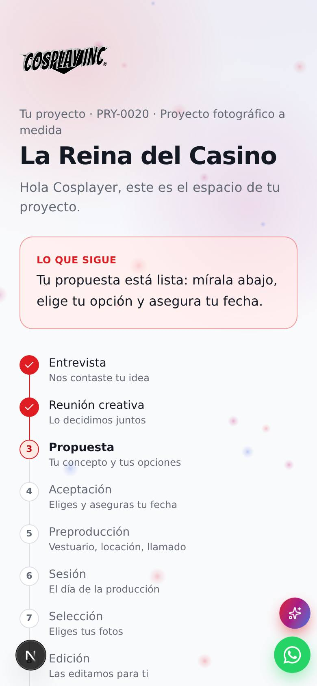
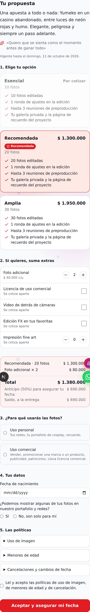
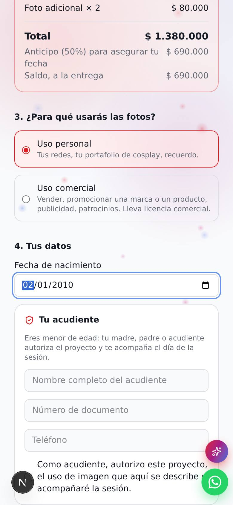
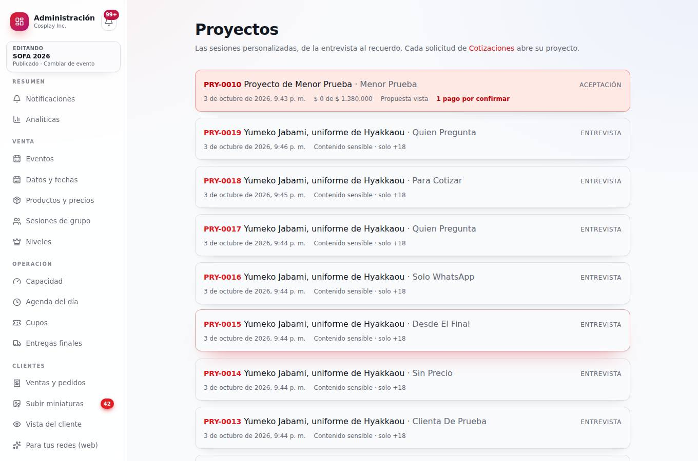
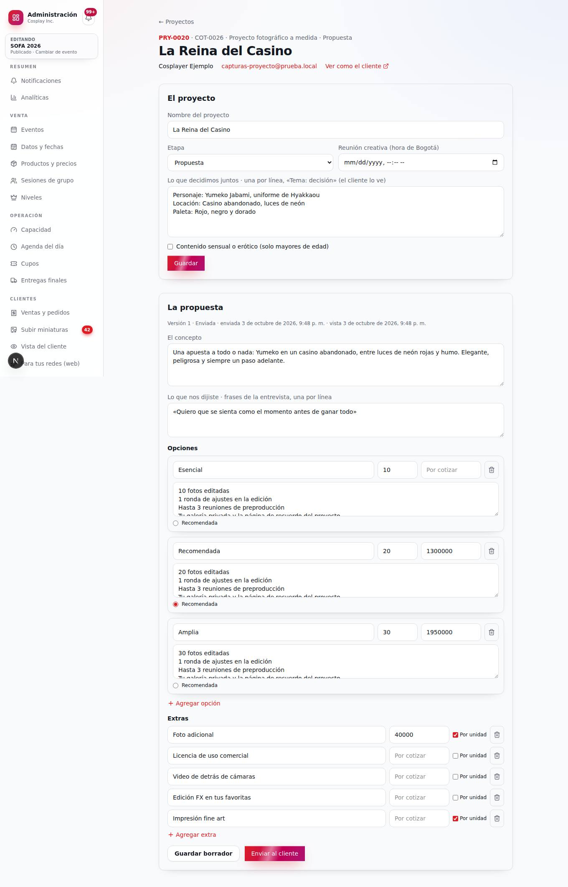

Cosplay Inc · Propuesta de producto · Octubre de 2026
«Tu Proyecto»: la sesión personalizada como experiencia completa
Hoy la sesión personalizada ya funciona por intuición: una entrevista bien hecha, una reunión, una propuesta y un cliente que se siente escuchado. El caso más reciente fue de 20 fotos por $1.300.000, varias con procesado especial. Esta propuesta convierte ese camino en un producto: un espacio privado dentro de Cosplay Inc donde el cliente vive su proyecto de principio a fin, y donde cada etapa es también una oportunidad de venta bien puesta.
Fase 1 · Ya está en el sistema
Publicado El corazón de «Tu Proyecto» ya funciona en producción, con las reglas comerciales que definiste:
| Regla | Cómo quedó |
|---|---|
| Precio por foto | $65.000; mínimo 20 fotos. La opción Recomendada sale en $1.300.000 (20 fotos) y la Amplia en $1.950.000 (30 fotos). |
| Opción de 10 fotos | «Esencial» aparece por cotizar hasta que definas su precio; el cliente la ve, pero no la puede elegir sin precio. |
| Foto adicional | $40.000 cada una. El cliente elige cuántas y el total se actualiza en vivo. |
| Anticipo | 50 % para asegurar la fecha y 50 % a la entrega. El saldo solo se puede pagar cuando el anticipo está confirmado. |
| Ajustes | 1 ronda en edición y hasta 3 reuniones de preproducción: van escritos en cada opción. |
| Licencia comercial | Al aceptar, el cliente dice si las fotos son para uso personal o comercial. Si es comercial, la licencia se suma sola, por cotizar, hasta que fijes su precio. |
| Menores de edad | Se pide la fecha de nacimiento. Si es menor: nombre, documento y teléfono del acudiente, más su autorización (y su acompañamiento en la sesión). Un proyecto sensual o erótico nunca se acepta con un menor; el sistema lo bloquea y el administrador lo marca en rojo. |
| Uso de imagen | El cliente decide si autoriza mostrar sus fotos en el portafolio y las redes de la casa, y acepta las políticas de uso de imagen, menores y cancelación (editables en Admin → Textos → «Proyectos personalizados»). |
| Cancelación y cambio de fecha | Texto basado en la normativa colombiana vigente (Estatuto del Consumidor, Ley 1480 de 2011), editable. |
| Vigencia de la propuesta | 7 días desde que se envía. |
El recorrido, tal como funciona hoy
- El cliente llena la entrevista en /sesionpersonalizada. El sistema guarda la cotización (COT-…) y abre su proyecto (PRY-…). El correo de confirmación ya trae el enlace privado a su proyecto.
- El cliente ve su espacio: dónde va (9 etapas), «Lo que sigue», «Lo que decidimos juntos» y su entrevista.
- En Admin → Proyectos el equipo pone el nombre real del proyecto, la fecha de la reunión creativa y las decisiones («Tema: decisión»), y arma la propuesta: concepto, frases de la entrevista, opciones y extras. Puede guardarla como borrador o enviarla. Si la cambia después de enviada, sale una versión nueva y la anterior queda reemplazada.
- El cliente recibe un correo, abre su propuesta (el equipo ve cuándo la vio), elige la opción y los extras, completa sus datos y acepta.
- Paga el anticipo por Nequi, transferencia, Llave Bre-B o Daviplata y deja la referencia en «Ya pagué». El equipo recibe un aviso, confirma el pago y el proyecto pasa a Preproducción. El cliente recibe la confirmación por correo.





Para revisar antes de darlo por definitivo:
- Las políticas (uso de imagen, menores y cancelación) son un buen punto de partida, pero conviene que las revise un abogado. Se editan sin tocar código.
- Que el acudiente acompañe la sesión de un menor es una propuesta mía: si no la quieres, se quita del texto.
- Faltan precios: la opción de 10 fotos, la licencia comercial, el video de detrás de cámaras, la edición FX y la impresión. Mientras no los definas, salen como «por cotizar».
- En esta fase los pagos se reportan y el equipo los confirma. Bold para proyectos queda para después, cuando estén listas sus credenciales.
1 · Lo que ya existe y lo que falta
La buena noticia: más de la mitad del camino ya está construido y probado en eventos. La propuesta es unirlo bajo un solo proyecto, no empezar de cero.
| Etapa | Hoy | Estado |
|---|---|---|
| Entrevista (brief) | Encuestas editables en /sesionpersonalizada, con varias versiones por tipo de sesión y un diagnóstico interno de costos. | Existe |
| Bandeja del equipo | Admin → Cotizaciones: cada solicitud con su código (COT-0001), estado y notas internas; aviso por correo al equipo y acuse al cliente. | Existe |
| Reunión creativa | Se hace por fuera; las decisiones quedan en la memoria o en un chat. | Falta |
| Propuesta y costo | Se arma a mano y se manda por WhatsApp o PDF. El cliente no puede elegir entre opciones ni aceptar en línea. | Falta |
| Aceptación y pago | Bold y pago directo (Nequi/efectivo) existen para eventos, pero no están ligados a una cotización. | Falta unirlo |
| Preproducción | Vestuario, maquillaje, locación (hay un directorio de lugares), fecha y llamado: todo por fuera. | Falta |
| Miniaturas, selección, edición y entrega | La galería completa de eventos: miniaturas con marca, selección, ampliación, edición con fecha estimada, entrega en alta, marca forense. | Existe (para eventos) |
| Publicar y recordar | «Para tus redes» (formatos, carrusel, collage, Reel, encuadre, texto con hashtags, «Publicar») y el correo «¿Ya publicaste?». | Existe |
| Espacio del cliente | El portal /p muestra compras de eventos. No hay un lugar para un proyecto con su historia. | Falta |
2 · El concepto: «Tu Proyecto»
Cada sesión personalizada se convierte en un proyecto con nombre propio, con un código del tipo PRY-0001 y su propia página privada, a la que se entra con un enlace igual que hoy a la galería. Es la «sala de producción» del cliente: ahí ve en qué va, qué se decidió, qué sigue, qué tiene que hacer él y qué está haciendo el equipo. Al terminar, la página queda como recuerdo del proyecto.
- ✅ Entrevista · 2 oct
- ✅ Reunión creativa · 5 oct · 6 decisiones
- ✅ Propuesta aceptada · Opción Recomendada
- ⏳ Preproducción · 3 de 5 listos
- ○ Sesión · sáb 18 oct · 2:00 p. m.
- ○ Selección · Edición · Entrega · Recuerdo
Por qué funciona
- Se siente atendido de verdad: la propuesta cita sus propias palabras de la entrevista. Ve que lo escucharon.
- Nunca se pregunta «¿y ahora qué?»: siempre hay una sola cosa que hacer, o «no tienes que hacer nada, te avisamos».
- Todo queda en un lugar: referencias, decisiones, pagos, fechas, fotos y entregas. Nada se pierde en el chat.
- El equipo gana orden: cada proyecto con su estado, sus pendientes y su dinero, visible en el administrador.
- Es una vitrina: un cliente feliz comparte su página de recuerdo, y eso vende el próximo proyecto.
3 · El recorrido, etapa por etapa
4 · La propuesta: el momento que más vende
Es donde se decide el ticket. Tres principios que ya funcionan en el mundo de los servicios creativos:
- Tres opciones, no una. Con una sola, el cliente decide «sí o no». Con tres, decide «cuál». La del medio va marcada como recomendada, y casi siempre es la que se elige.
- Sus palabras primero. «Nos dijiste que querías una atmósfera de casino de lujo, dramática, con cartas y fichas…»: es la prueba de que lo escucharon.
- Extras en un toque, el total a la vista. Video de detrás de cámaras, edición FX, maquillaje profesional, impresión fine art, fotos adicionales. Cada uno suma en vivo, sin tener que preguntar «¿y si agrego…?».
Ejemplo con el caso real como referencia. Los montos de las otras dos opciones son ilustrativos: los precios los defines tú.
12 fotos editadas
20 fotos editadas
30 fotos + video
La «segunda encuesta» que mencionas encaja aquí: en lugar de otro formulario, el cliente arma su propuesta eligiendo la opción y los extras. Lo que elige queda guardado como el pedido del proyecto, con su precio, y el equipo lo ve tal cual.
5 · Dónde está el dinero (monetización)
| Momento | Palanca | Por qué funciona |
|---|---|---|
| Propuesta | Escalera de tres opciones + extras | Sube el ticket promedio sin presión: el cliente elige más porque ve el valor. |
| Aceptación | Anticipo para asegurar la fecha | Compromiso real: casi elimina las cancelaciones y las fechas perdidas. |
| Selección | Fotos adicionales al precio de su propuesta | Ya pasa en eventos: de las miniaturas siempre gustan más de las incluidas. |
| Edición | Mejora a FX o composición en las favoritas | Se ofrece cuando ya ve la foto: el deseo está en su punto más alto. |
| Entrega | Impresos: fine art, cuadro, fotolibro del proyecto | Alto margen y es el recuerdo físico que más se valora; encaja con «el espacio en línea como recuerdo». |
| Recuerdo | «Parte 2»: otro personaje o una continuación, con un beneficio | Quien vivió una buena experiencia quiere repetirla; el aniversario es el momento natural. |
| Comunidad | Proyectos de crew y dúo (precio por persona, ya existe la lógica de grupos) | Un solo proyecto, varios clientes: más ingreso por producción. |
| Creadores | Licencia de uso comercial (Patreon, impresos para vender en convenciones, plataformas de suscripción) | Muchos cosplayers monetizan sus fotos. Cobrar la licencia de uso comercial aparte es estándar en la industria y una línea de ingreso grande. |
| Fidelidad | Membresía anual (N sesiones al año, prioridad de fechas, beneficios) | Ingreso recurrente y clientes que planean contigo su temporada de convenciones. |
| Recomendación | Referidos con crédito (ya existe el crédito a favor) | El cliente feliz es el mejor vendedor en una comunidad tan conectada. |
6 · Hacer sentir bien al cliente (los detalles)
Bienvenida al proyecto · «Tu propuesta está lista» · «Tu fecha quedó asegurada» · hoja de llamado · «Ya están tus miniaturas» · entrega · «¿Ya publicaste?» · aniversario. Todos editables en Admin → Textos, como los de hoy.
«La Reina del Casino» en vez de «COT-0007». El cliente siente que es su obra, y el equipo lo recuerda mejor.
Como la línea de tiempo de los eventos: «Lo que sigue» con un botón, o «no tienes que hacer nada, te avisamos».
El proyecto muestra quién del equipo lo acompaña, como rol (sin exponer datos personales), y un botón directo a WhatsApp.
Una o dos fotos de detrás de cámaras al terminar la sesión. Cuesta poco y es lo que más se comparte mientras espera.
Para sesiones sensuales o eróticas: límites acordados por escrito en el proyecto, verificación de mayoría de edad y autorización de uso de imagen explícita (portafolio sí o no). Protege al cliente y a la marca.
7 · Cómo se construye (reutilizando lo que ya funciona)
La idea técnica clave: el proyecto usa la misma galería de los eventos para las miniaturas, la selección, la edición, la entrega, «Para tus redes» y los correos. Todo eso ya está probado. Lo nuevo se concentra en lo que pasa antes de la sesión (proyecto, reunión, propuesta, pago y preproducción) y en la página de recuerdo.
| Pieza nueva | Qué guarda |
|---|---|
| Proyecto | Código PRY, nombre, cliente, la entrevista de origen, etapa actual, productor asignado y enlace privado. |
| Decisiones de la reunión | Fecha de la reunión y la lista de decisiones (tema → decisión), visibles para el cliente. |
| Referencias (moodboard) | Imágenes y enlaces que suben el cliente y el equipo, con nota. |
| Propuesta (con versiones) | Concepto, citas de la entrevista, opciones con lo que incluyen y su precio, extras, vigencia, estado (enviada, vista, aceptada) y la elección final. |
| Pagos del proyecto | Anticipo y saldo con Bold o Nequi, sobre las órdenes y pagos que ya existen. |
| Preproducción | Lista de pendientes con responsable y estado, y la hoja de llamado. |
| Revisiones | Pedidos de ajuste sobre fotos entregadas, contados según la opción contratada. |
8 · Plan por fases
Proyecto + propuesta + pago
Al enviar la entrevista se crea el proyecto. Página del proyecto con su línea de tiempo y «Lo que sigue». Desde el administrador: convertir la solicitud en proyecto, anotar las decisiones de la reunión y armar la propuesta con 3 opciones y extras. El cliente compara, elige, acepta y paga el anticipo. Correos de cada paso.
Preproducción + galería
Moodboard compartido, lista de pendientes, hoja de llamado y conexión con la galería existente (miniaturas, selección, edición, entrega), con saldo antes de la entrega y rondas de ajuste.
Página de recuerdo + ventas después de la entrega
Página final del proyecto, adelanto del mismo día, impresos y fotolibro, mejoras a FX, aniversario y «Parte 2».
Licencias, membresía, crews, referidos
Las palancas grandes de monetización en la comunidad, cuando el flujo base esté rodando.
9 · Decisiones que necesito de ti antes de construir
Son reglas comerciales; no las invento, las defines tú. Ya definiste el precio por foto, el anticipo, las rondas de ajuste, la foto adicional, cómo se ofrece la licencia y las reglas para menores (ver «Fase 1»). Faltan los precios de la opción de 10 fotos, de la licencia y de los demás extras.
- Precios de las opciones (o la base por foto). El caso real da una referencia de unos $65.000 por foto en la opción de 20, con procesado especial.
- Anticipo: qué porcentaje (por ejemplo, 50 %) y cuándo se paga el saldo (¿antes de la sesión o antes de la entrega?).
- Cancelación y cambio de fecha: qué pasa con el anticipo.
- Rondas de ajuste por opción y el precio de una ronda extra.
- Vigencia de la propuesta (por ejemplo, 7 días).
- Extras y sus precios: video de detrás de cámaras, FX, maquillaje, impresos, foto adicional.
- Licencia de uso comercial: ¿se ofrece?, ¿a qué precio?
- Sesiones sensuales o eróticas: verificación de edad y política de uso de imagen en el portafolio.
10 · Cómo saber si funciona
- Embudo: entrevistas → reuniones → propuestas vistas → aceptadas (la tasa de cierre).
- Ticket promedio y qué opción se elige (si la Recomendada gana, la escalera está bien armada).
- Extras: qué porcentaje de proyectos suma al menos uno.
- Tiempo de entrega frente a lo prometido.
- Recompra y referidos a los 6 y 12 meses.
11 · Desde aquí, otras cosas
- Red de aliados: maquilladores, sastres y utileros del directorio, con comisión por proyecto.
- Talleres: poses, maquillaje para cámara, cómo preparar un traje para fotos. Ingresos y comunidad.
- Marcas y convenciones: producciones para marcas que quieren cosplayers, y cobertura oficial de eventos.
- Convocatorias: «Proyecto del mes» con votación de la comunidad. El ganador recibe una producción y la marca gana alcance.
- Prints en eventos: los clientes venden sus fotos con licencia, y tú imprimes y cobras la licencia.
Documento de trabajo. Las cifras que no salen del caso real son ilustrativas hasta que se definan las reglas comerciales de la sección 9.